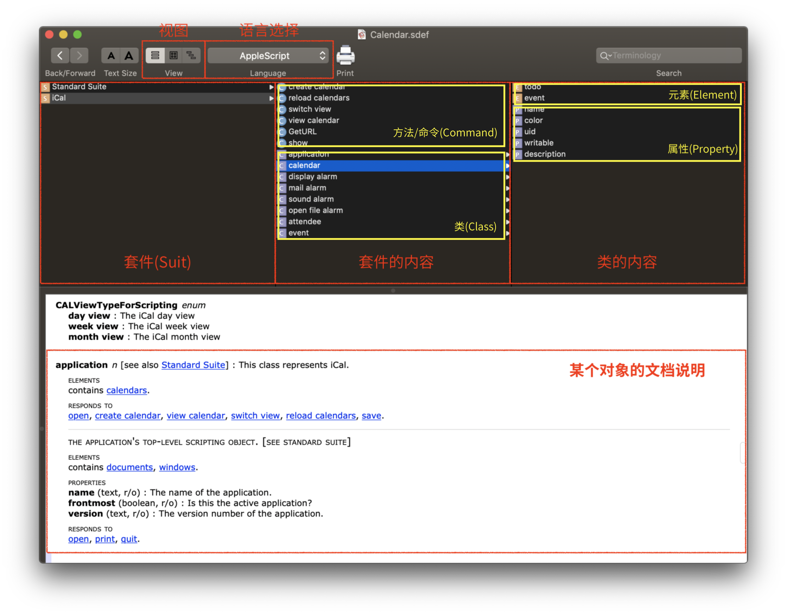
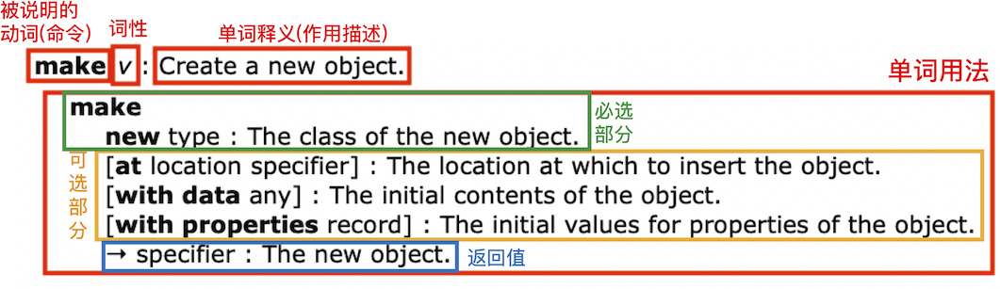
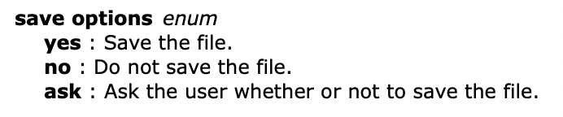
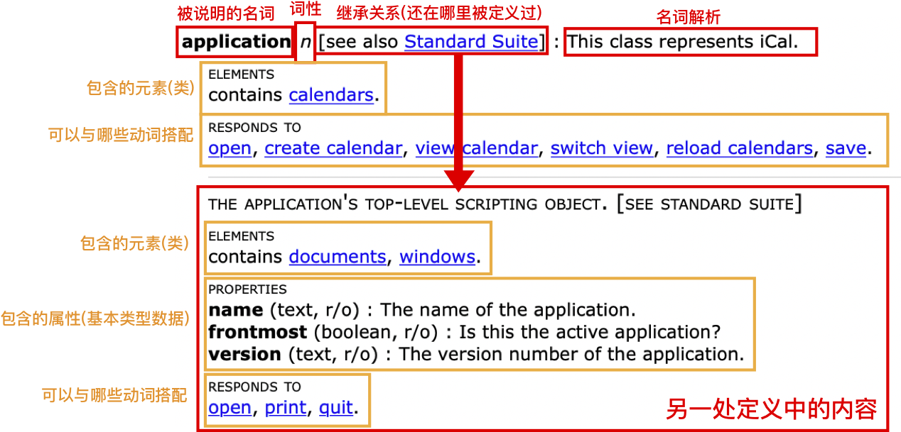

目前可以支持 AppleScript 、 JavaScript 、 Objective-C 三种语言来实现自动化，这里暂时介绍 AppleScript。
Script Editor 中带有文档库和模板，用起来还是比较方便的。
Library
并不是所有应用程序都可以和 AppleScript 连通，需要应用程序开发者有意地留出一套供给 AppleScript 的接口才可以。，如何知道某个程序是否支持 AppleScript 以及具体提供了怎样的 API 规范，请使用 ScriptEditor.app 的 Library 来查看程序的字典 Dictionary）：
- 方法一：菜单 [File] - [Opne Dictionary] 查看所有已知的应用程序字典。
- 方法二：将应用程序拖放到
Script Editor图标上。 - 方法三：
- 菜单 [Window] - [Library]
- 可以看到已经导入的支持 AppleScript 接口的应用程序的接口文档，双击查看。
- 点击 [+] ，选定某个
.app应用文件，如果支持，文档的字典将被导入；如果不支持，将会提示。
字典(Dictionary)
字典是文档接口规范的说明，打开字典后，会出现以下界面：

字典上边是三列，和Finder的列视图一样，自左向右展开；选中一项，下半面的文档就会跳到对应的对象的说明上。
先看上三列，
- 最左边是套件列，列出了该应用字典包含的套件(一般都会包含Standard Suite，里面是一些程序的基本操作例如打开关闭文件、操作程序的窗口等)。
- 中间列显示选中的套件的内容，其中包含了若干
命令(圆形的 C 图标)和类(方形的 C 图标)。 - 最右边的列显示选中的类的内容，包含了若干
元素(E图标)和属性(P 图标)。
要理解这些东西是怎样工作的，就应当先明白AppleScript的语言逻辑。
理解过逻辑后，来解释说明文档该如何用。AppleScript具有英语的一些特点，所以字典看起来还真像一本英语字典。
动词
先看”动词“：

单词用法部分，最上面的主体 make 肯定要写上，后面相当于是这个动词的“参数”，每一行列出一个参数，:之前的为参数格式说明，:之后的为对参数的说明。
参数有必选参数和可选参数，被[]括起来的是可选参数(使用的时候不加[])。使用时，参数之间用空格分开。:之前，粗体内容按原样写上，非粗体则替换为对应的对象。
可以注意到非粗体部分的名称是不一样的，不同的名称说明可以充当参数的对象是不同的，有这么几种：
- 数据类型
number、text、boolean、date、list、record或者类名：可以使用这些类型的变量或者常量作为参数。 any：可以用任何对象作参数。type：类型名、类名。specifier或者xxx specifier：某个对象实例(变量名或者返回值)，xxx是某个类名，代表这个实例应当是某种类型的。还有一种特殊的，例如 [saving yes/no/ask] 是说只能写
yes、no和ask三种，这是一种枚举类型的参数，一般枚举参数上会有链接，点击会调到对应的枚举类型上去：
名词

比较有意思的是第一行方括号中的内容，见过两种：
[see also xxx]是指，这个名词(类)还在其他 Suit 中被定义过，那么下方就会展示另一处定义的内容(箭头所指)；[inh. xxx]是指，这个类继承于另外一个类。如果是[inh. A > B]就说明该类继承于A类，而A类又继承于B类，那么下方就会展示基类的内容。
元素(ELEMENT)：一个类中的某元素不一定只有一个(从图中的documents和windows的s就可以看出来，毕竟第三列中是document和window)，很好理解， appliction 可以有很多个 window ，每一个都是其元素。
* 使用 `(the) count of [元素名]` 确定同类型元素有几个；
* 使用 `[元素名] [序号(可以是integer变量)]` 来获取某一个元素；`the last of`、`the first of` 也可以，`item xxx of`则是不可以的——因为这不是`item`而是`element`。
具体来看一下 属性(PROPERTIES)：
- 粗体 是属性的名称；
- 括号内第一项是属性的类型；
- 括号内第二项是属性的读写权限；
:后面是属性的解释。
编辑器
创建脚本、调试这些是基本操作，略。
当你在编辑器内完成输入上面的代码后，按下上面的 Compile 铁锤图标。如果你的语法是正确的话，你所输入的代码会被自动格式化并改变颜色。如果你输入的时候出现了错误，当你编译的时候编辑器会告诉你哪一块出错了，并尝试告诉你它认为错误是什么。下面是编辑器默认的一些颜色分别代表什么，你可以在菜单栏的 [AppleScript Editor] - [Preferences] 里看到并修改。
你的代码成功编译后，再按 Run 图标，会运行脚本。在运行一脚本时，编辑器会告诉你运行的结果是什么，或者什么被返回了。脚本编辑器会将结果显示在下半部分的结果区中。
其他窍门
- 按下 esc 键，会出现代码补全菜单
- 在编辑区点击右键（或按住 control 键再点击左键）呼出上下文菜单：在上下文菜单中我们可以将 AppleScript 语句快速地插入到编辑区中
编辑器支持代码补全和缩写：
你可以输入：
tell app "Finder"
end
在编译后将被替换为：
tell application "Finder"
end tell
在编写 AppleScript 脚本时，是不区分大小写的，当然在编译过后也会被替换成正确的大小写形式。
其他例子有：
- application 简写为 app
- end tell/repeat/try 简写为 end
- through 简写为 thru
- if 语句 可省略 then